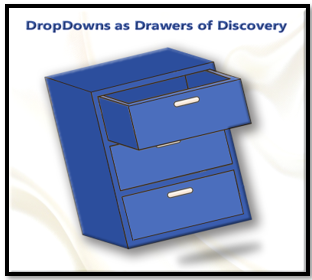
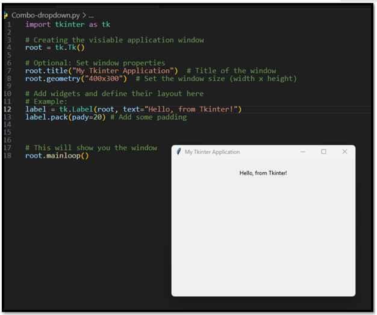
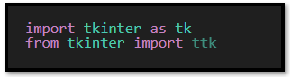
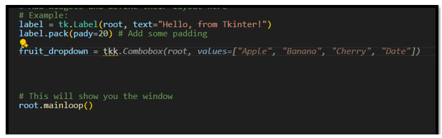
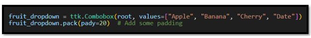
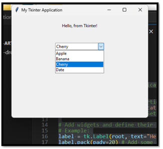
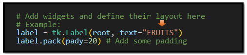
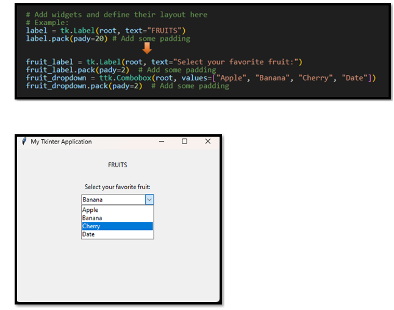
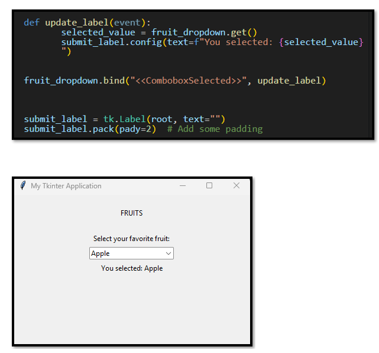

~Dropdowns as Drawers of Discovery~
10/20/2025

What is the dropdown combo box, in Python and Tkinter?
The combo box is a widget in Tkinter’s library, where you can easily give the user a list of choices.
Starting with the simplest of code. You have to start a python file with, at the very least, the creation of the window. Here is some simple startup code.
In Visual Studio name your project, Combo-dropdown.py.
import tkinter as tk
# Creating the visiable application window
root = tk.Tk()
# Optional: Set window properties
root.title("My Tkinter Application") # Title of the window
root.geometry("400x300") # Set the window size (width x height)
# Add widgets and define their layout here
# Example:
label = tk.Label(root, text="Hello, from Tkinter!")
label.pack(pady=20) # Add some padding
# This will show you the window
root.mainloop()
The Imports
For a lot of projects, when using tkinter, you may find that we can start with just the one import of:
import tkinter as tk
But here we are going to use a combo box, and we can do a lot more things, if we also import ttk. So, add this line to your top imports.
from tkinter import ttk

Creating the Dropdown
We are going to create a variable to hold our dropdown. Since we want it to be a name that represents what we are trying to do, we could just give it the name ‘dropdown,’ but we actually want to have this dropdown carry a list of something that the user can choose from. So, what list should we create? How about, to start, just a simple list of fruit. So, a good name for our dropdown would be ‘fruit_dropdown.’
Since you added the import of the library ttk, you will find that intellisense will now figure out what you want, and pretty much suggest the rest of what you need.

So, you can go ahead and just accept what intellisense is giving you because this is exactly what you need is the Combobox.
You may be surprised, that intellisense, has probably also figured out that not only do you want your computer to know that you have a combobox, but that you probably would also like that Combobox placed on your application window. And because it figured that out, it is also trying to give you another line of code with the word ‘pack’ in it. ‘pack’ is used to place the Combobox onto the application window, and without this additional line you would never be able to see it. So, you had better listen to intellisense, and grab that line of code too.
Now your two lines of code should look like this.

fruit_dropdown = ttk.Combobox(root, values=["Apple", "Banana", "Cherry",])
fruit_dropdown.pack(pady=20) # Add some padding
What is root, and why is it there?
You may have noticed that inside of your argument list, your first value is root. root is your parent object, and it is the container of all of your widgets. It is where you are placing your widgets. So, Combobox is a widget, and it is being placed in the root. Your root is also your window. You always need to have your container as the first value when defining a widget. But ‘root’ doesn’t always have to be your container. You can have different frames that can be used to organize sections of your window, and you can also have a canvas, which is used for displaying different graphical objects: text, drawings, widgets.
The full Code so far for the Project
import tkinter as tk
from tkinter import ttk
# Creating the visiable application window
root = tk.Tk()
# Optional: Set window properties
root.title("My Tkinter Application") # Title of the window
root.geometry("400x300") # Set the window size (width x height)
# Add widgets and define their layout here
# Example:
label = tk.Label(root, text="Hello, from Tkinter!")
label.pack(pady=20) # Add some padding
fruit_dropdown = ttk.Combobox(root, values=["Apple", "Banana", "Cherry", "Date"])
fruit_dropdown.pack(pady=20) # Add some padding
# This will show you the window
root.mainloop()
Test your Project
Run the project with the play button to see your new combo box in the window.
Ok, let’s change the text on the label to say fruits because that is what our dropdown is displaying.

And another label for the dropdown widget itself. Let’s reduce the padding for the label, and the Combobox; so now, we can clearly see that these two items go together.

Getting the information from the dropdown
Ok, well we have our dropdown, but what good is it actually doing, if you are not getting the information from it, and sending it somewhere. Here we will use ‘get’ to get the text from the dropdown container. We will start by writing a very simple function that will be used to send the information to the label on the window. This will use a very easy event <<ComboboxSelected>>. This event will work as soon as the user clicks on an option in the Combobox. No need for a submit button, although you could also use one. But for this example we will make it as simple as possible and just have it activated on a User’s click event. Now the data from the dropdown list will be sent to the submit_label, which we also added to the window.

The Full Code for the Project
import tkinter as tk
from tkinter import ttk
# Creating the visiable application window
root = tk.Tk()
# Optional: Set window properties
root.title("My Tkinter Application") # Title of the window
root.geometry("400x300") # Set the window size (width x height)
# Add widgets and define their layout here
# Example:
label = tk.Label(root, text="FRUITS")
label.pack(pady=20) # Add some padding
fruit_label = tk.Label(root, text="Select your favorite fruit:")
fruit_label.pack(pady=2) # Add some padding
fruit_dropdown = ttk.Combobox(root, values=["Apple", "Banana", "Cherry", "Date"])
fruit_dropdown.pack(pady=2) # Add some padding
def update_label(event):
selected_value = fruit_dropdown.get()
submit_label.config(text=f"You selected: {selected_value}")
fruit_dropdown.bind("<<ComboboxSelected>>", update_label)
submit_label = tk.Label(root, text="")
submit_label.pack(pady=2) # Add some padding
# This will show you the window
root.mainloop()